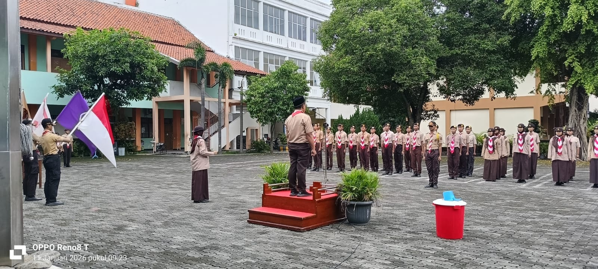
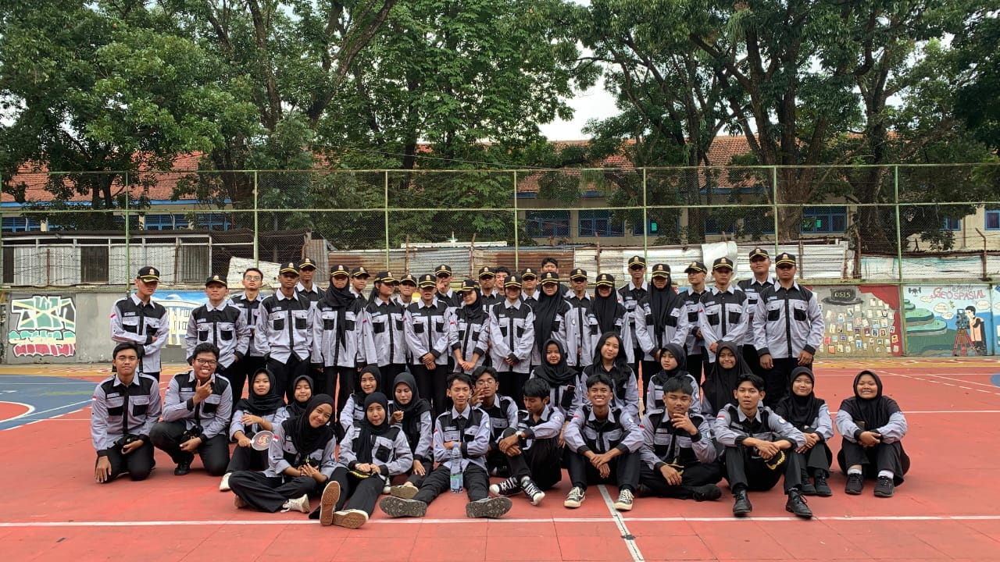
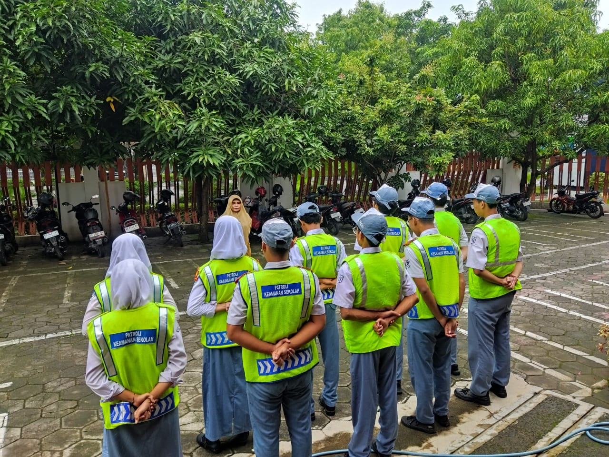
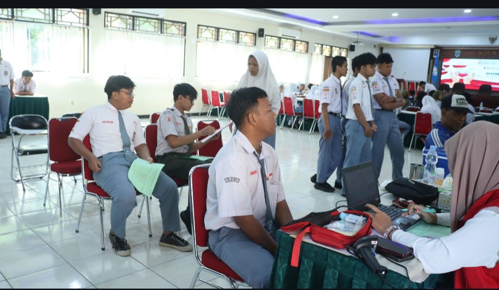
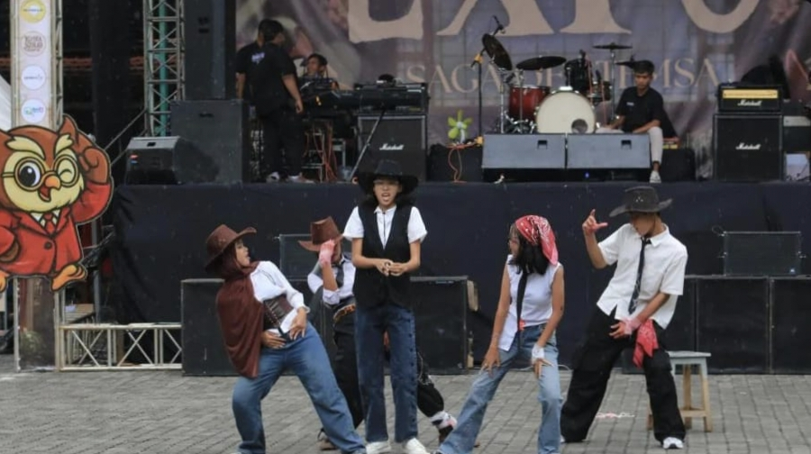

Galeri Kegiatan
Dokumentasi berbagai kegiatan ekstrakurikuler.






Temukan ekstrakurikuler yang sesuai dengan minat, bakat, dan passion-mu di sekolah.
Lihat EkstrakurikulerPilih Ekskul yang sesuai dengan minat dan bakatmu.
Organisasi siswa untuk melatih kepemimpinan dan tanggung jawab.
Deskripsi: Wadah kepemimpinan siswa untuk mengelola kegiatan sekolah dan aspirasi murid.
Jadwal: Rabu dan Sabtu
Pembina: Eeng Taufan Nirwana S.pd
Prestasi: -
Musyawarah perwakilan siswa sebagai penyalur aspirasi.
Deskripsi: Musyawarah Perwakilan Kelas yang bertugas mengawasi kinerja OSIS.
Jadwal: Flexibel/Sesuai Event
Pembina: Agus Santoso S.Pd
Prestasi: -
Wadah pengembangan bakat dan kreativitas siswa.
Deskripsi: Ekstrakurikuler yang fokus pada kegiatan pramuka.
Jadwal: Fleksibel
Pembina: Niswatun Khasanah S.Pd
Prestasi: -
Kegiatan yang membentuk karakter dan kedisiplinan.
Deskripsi: Fokus pada kedisiplinan dan pembentukan karakter tangguh.
Jadwal: Flexibel
Pembina: Fajar Adi Nugroho S.Pd
Prestasi: -
Mengembangkan bakat bernyanyi dan kerja sama tim.
Deskripsi: Pengembangan bakat menyanyi dan kepercayaan diri.
Jadwal: Fleksibel
Pembina: Dewi Puspitasari S.Pd
Prestasi: -
Patroli keamanan sekolah untuk menumbuhkan disiplin.
Deskripsi: Patroli Keamanan Sekolah untuk menjaga ketertiban di lingkungan sekolah.
Jadwal: Flexibel
Pembina: Hindriati S.Pd
Prestasi: -
Mengasah kemampuan olahraga dan kerja sama tim.
Deskripsi: Olahraga tim untuk melatih fisik, strategi, dan sportivitas.
Jadwal: Fleksibel
Pembina: Nanang Djatmiko S.Pd
Prestasi: -
Olahraga populer untuk meningkatkan kebugaran.
Deskripsi: Olahraga bola dalam ruangan yang mengedepankan kerja sama tim.
Jadwal: Fleksibel
Pembina: Nanang Djatmiko S.Pd
Prestasi: Juara 1 Student Futsal League 2026S
Melatih strategi, koordinasi, dan kekompakan.
Deskripsi: Melatih ketangkasan dan kekompakan tim dalam olahraga voli.
Jadwal: Jumat dan Minggu
Pembina: Fajar Adi Nugroho S.Pd
Prestasi: -
Meningkatkan kemampuan berbahasa Inggris.
Deskripsi: Mengasah kemampuan berbicara, debat, dan menulis dalam Bahasa Inggris.
Jadwal: Kamis
Pembina: Wening S.Pd
Prestasi: -
Belajar bahasa dan budaya Jepang.
Deskripsi: Mempelajari bahasa, anime, dan kebudayaan Jepang yang unik.
Jadwal: Selasa dan Kamis
Pembina: Rizqiyana Saraswati S.Pd
Prestasi: -
Wadah kreativitas untuk kreator digital dan konten video.
Deskripsi: Ekskul untuk kreator konten digital, video editor, dan fotografer sekolah.
Jadwal: Flexibel/Sesuai Event
Pembina: Melisa Phuby S.Sos M.Pd
Prestasi: -
Membina keimanan dan akhlak Islami.
Deskripsi: Kerohanian Islam untuk mendalami agama dan mempererat ukhuwah.
Jadwal: Jumat
Pembina: Syahrun Mubarok S.PdI
Prestasi: -
Pembinaan iman dan karakter Katolik.
Deskripsi: Pendalaman iman dan persekutuan bagi siswa beragama Katolik.
Jadwal: Jumat
Pembina: Kustyaningrm S.Pd
Prestasi: -
Persekutuan dan pengembangan iman Kristen.
Deskripsi: Persekutuan doa dan pendalaman Alkitab bagi siswa Kristen.
Jadwal: Fleksibel
Pembina: Igo Krisna Putra S.Pd
Prestasi: -
Melatih kepedulian dan keterampilan pertolongan pertama.
Deskripsi: Palang Merah Remaja yang melatih keterampilan medis dasar dan sosial.
Jadwal: Selasa dan Jumat
Pembina: Agus Widianto S.Pd M.Pd
Prestasi: -
Meningkatkan kemampuan olahraga bulu tangkis.
Deskripsi: Pelatihan teknik bulu tangkis dari tingkat dasar hingga mahir.
Jadwal: Fleksibel
Pembina: Nanang Djatmiko S.Pd
Prestasi: -
Menyalurkan bakat seni peran dan kreativitas.
Deskripsi: Seni peran, ekspresi diri, dan pementasan drama panggung.
Jadwal: Flexibel/Sesuai Event
Pembina: Budi Santoso S.Pd
Prestasi: -
Mengembangkan bakat seni tari modern maupun tradisional.
Deskripsi: Ekspresi melalui gerakan tari modern (Modern Dance) maupun Tradisional.
Jadwal: Fleksibel
Pembina: Novia Dhian S.Pn
Prestasi: -
Mengasah strategi, kerja tim, dan sportivitas digital.
Deskripsi: Olahraga digital kompetitif yang melatih strategi dan koordinasi cepat.
Jadwal: Jumat
Pembina: Muh. Haris Setyawan S.Pd
Prestasi: -
Eksplorasi di Alam Terbuka.
Deskripsi: Jelajahi alam terbuka untuk melatih disiplin dan mandiri.
Jadwal: Selasa,Kamis dan Sabtu
Pembina: Muh.Haris Setyawan
Prestasi: -
Membentuk duta sekolah yang berprestasi dan inspiratif.
Deskripsi: Pemilihan duta sekolah yang berwawasan luas dan berpenampilan menarik.
Jadwal: Sesuai Agenda Tahunan
Pembina: -
Prestasi: -
Dokumentasi berbagai kegiatan ekstrakurikuler.





Hubungi kami untuk informasi lebih lanjut.
📍 Jl. Adi Sucipto No.33, Manahan, Kec. Banjarsari, Kota Surakarta, Jawa Tengah 57139
✉️ info@smkn2solo.sch.id